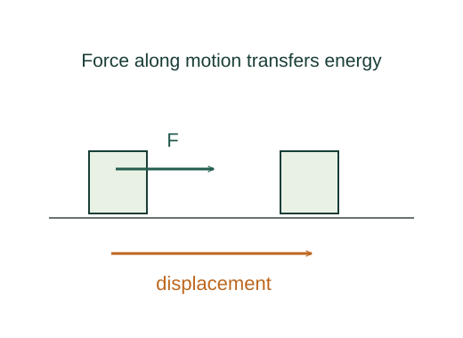

Derive translational and rotational power
Work is the accumulated component of force along displacement. Its instantaneous rate defines power.
What the symbols mean
P: instantaneous power; 𝐅: force; 𝐯: application-point velocity; τ: signed axial torque; θ: angle in radians.
When this applies
Particle work, or a rigid body rotating about a fixed axis; sum individual contributions for multiple forces.
Developing the argument

Start from mechanical work
Work is the accumulated component of force along displacement. Its instantaneous rate defines power.
Divide by the elapsed time
Since d𝐫/dt is velocity, the work rate is the dot product with velocity.
Use the circular displacement
At radius r the tangential displacement is r dθ. Only tangential force contributes; its moment is τ = rFt.
Accumulate or differentiate
Integrate torque for finite work; for constant torque it leaves the integral. Divide differential work by dt for power.
A worked example
A constant 5 N·m torque through 3 rad does 15 J of work. At 2 rad/s its power is 10 W.
Derivation behind this calculation ↗A point to keep straight
Use the velocity of the point where the force acts, not automatically the centre-of-mass velocity.
Check the assumptions and derivation ↗